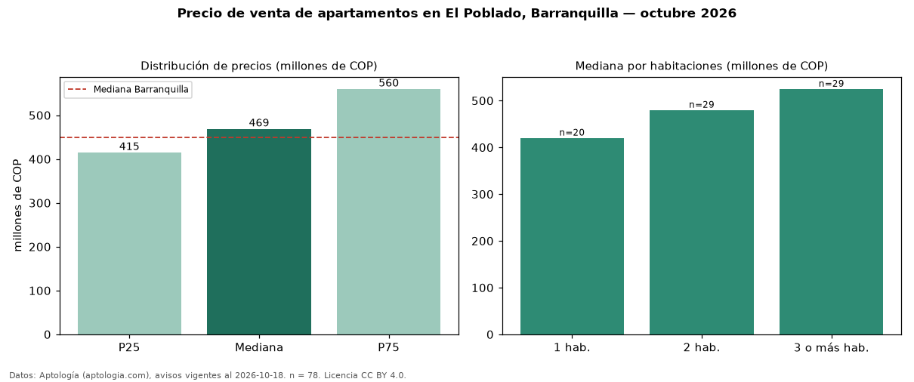

Precio de venta de apartamentos en El Poblado, Barranquilla — octubre 2026
Con 78 avisos vigentes, el precio mediano de apartamentos en venta en El Poblado, Barranquilla es COP 469 millones. Prácticamente coincide con la mediana de Barranquilla para apartamentos (COP 450 millones). Por metro cuadrado, la mediana es COP 6,00 millones/m² (n = 75 avisos con área), 32 % por encima de Barranquilla (COP 4,53 millones/m²). El área mediana anunciada es 88 m². El segmento con más oferta es el de 2 habitaciones (29 avisos, mediana COP 480 millones); pasar de 1 habitación a 3 o más habitaciones cambia la mediana +25 %. La administración mediana declarada es COP 648.000 al mes (n = 55). Por precio mediano es el puesto 19 de 43 barrios de Barranquilla con al menos 30 avisos de apartamentos en venta (COP): en la franja media. El estrato más frecuente es 5 (87 % de los avisos con estrato). Datos: Aptología (aptologia.com), CC BY 4.0 — https://www.aptologia.com/venta/barranquilla/el-poblado. Archivos: PDF, CSV con las cifras y gráfica PNG.

| Avisos únicos | 78 |
|---|---|
| Percentil 25 | COP 415.000.000 |
| Mediana | COP 469.000.000 |
| Percentil 75 | COP 560.000.000 |
| Mediana por m² | COP 6.000.000 |
Fuente: avisos vigentes de portales inmobiliarios recopilados por Aptología, deduplicados (mínimo 30 avisos únicos por celda). Precios pedidos, no cerrados. Fecha: 2026-10-18.